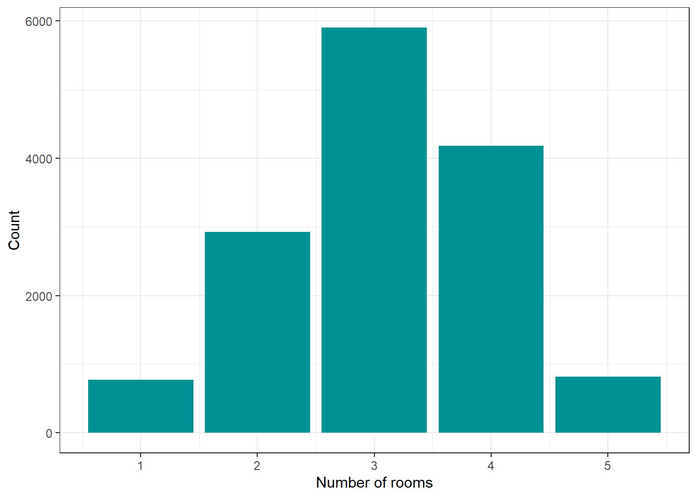
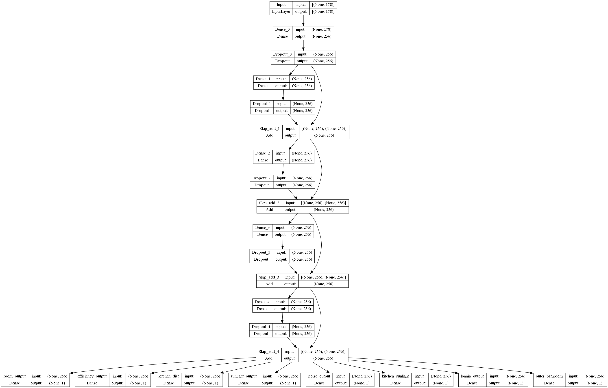
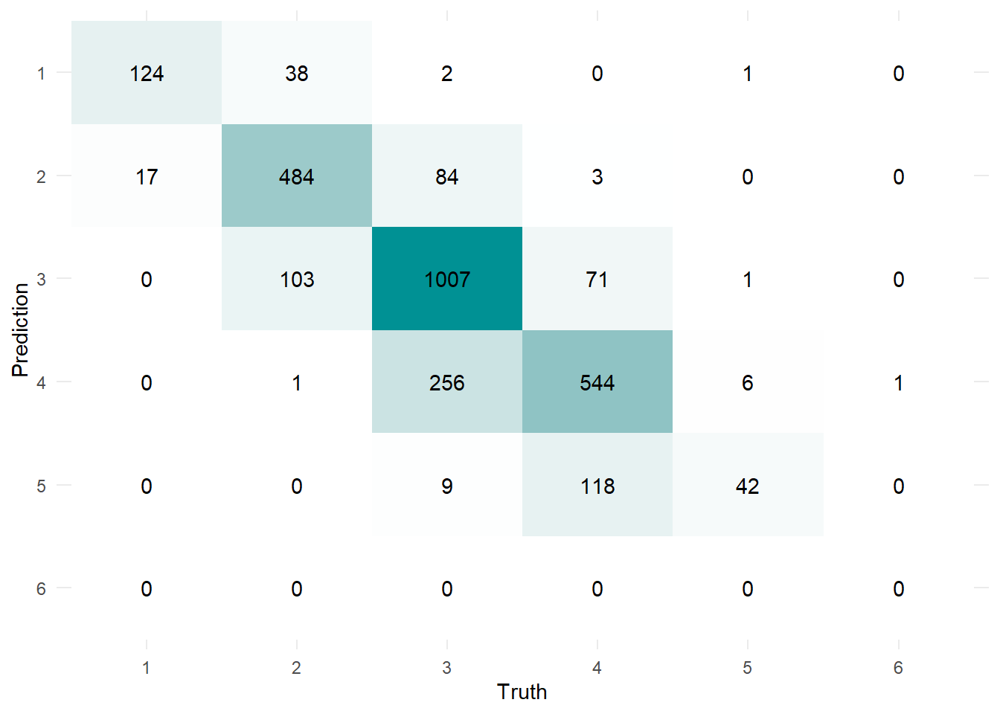
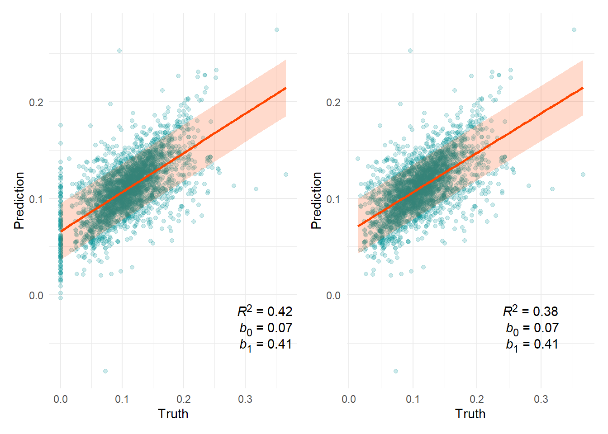
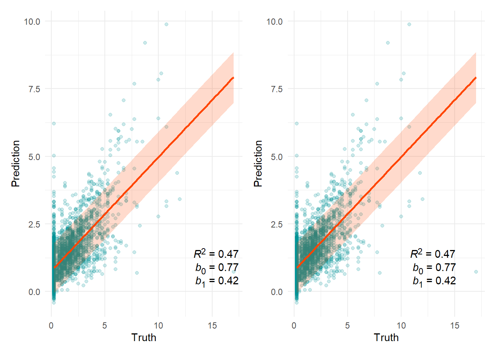
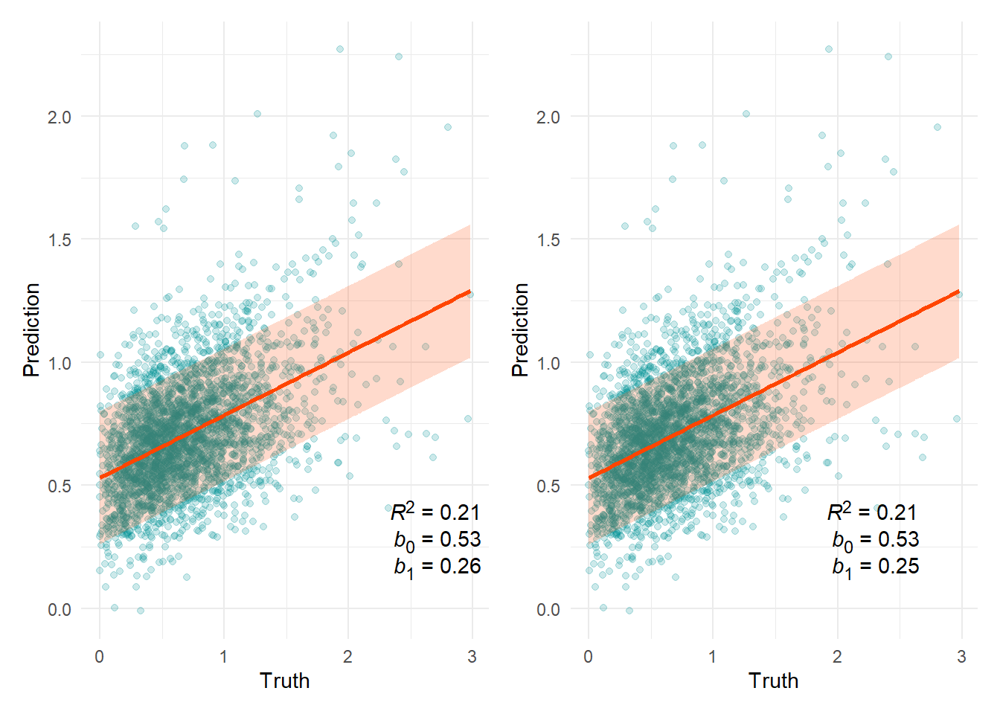
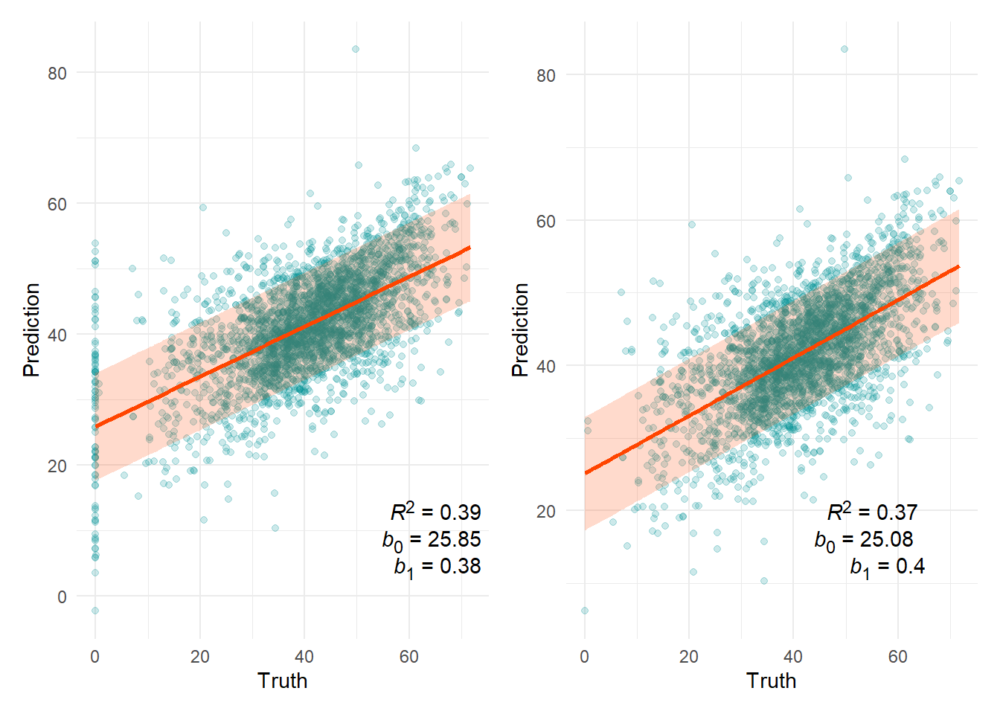
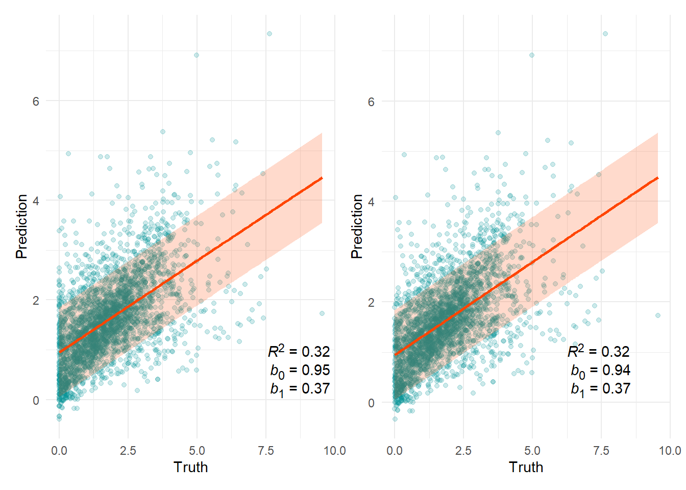

| Variable | Min | Q1 | Median | Mean | Q3 | Max | Missing |
|---|---|---|---|---|---|---|---|
| Corridor area ratio | 0.00 | 0.08 | 0.11 | 0.11 | 0.14 | 0.37 | 0 |
| Largest room sunlight | 0.00 | 0.40 | 0.65 | 0.72 | 0.95 | 3.93 | 0 |
| Largest room noise | 0.00 | 33.89 | 41.90 | 40.86 | 49.62 | 71.71 | 0 |
| Largest room kitchen distance | 0.25 | 0.25 | 0.75 | 1.42 | 2.00 | 142.25 | 33 |
| Kitchen sunlight | 0.00 | 0.80 | 1.62 | 1.81 | 2.56 | 9.55 | 0 |
Neufert 4.0 July 23 Progress Report
Neufert 4.0
machine learning
Motivation
We are attempting to build a deep neural network that would be able to predict likely characteristics of an apartment based solely on data derived from the geometry of its outline as well as basic variables related to the view from the apartment (e.g. whether or not a highway or railway is visible).
Data
We made use of the Neufert 4.0 data based on the Swiss dwellings dataset. We reviewed the original data, removing duplicates, cleaning the data of errors, and adding apartment and floor outline geometries. The resulting dataset contained 14,607 entries (one per apartment). Based on the data, we calculated 178 features that encoded geometrical and view properties of the individual apartments. These features were used as input variables for the neural network models.
As output variables, we chose a number of continuous and categorical variables:
| Variable | No | Yes |
|---|---|---|
| Has loggia | 9704 | 4903 |
| Bathroom has window | 3630 | 10977 |

The dataset was split into a training set (N = 8,744), development set (N = 2,915), and test set (N = 2,915). The development set was used for model evaluation during the hyperparameter tuning stage of the model development.
General neural network architecture
The chosen neural network consisted of blocs of fully connected layers with L2 regularisation, followed by a dropout layer. For every but the first bloc, we also included a skip connection from the previous bloc. The number of units per layer, the value of regularisation parameter (\(\lambda\)), the dropout proportion, as well as the number of blocs in the network were treated as variable hyperparameters. Finally, a single-unit layer for each of the eight outcome variables was added in parallel to the end of the last bloc.
Hyperparameter search
We performed a grid search of the hyperparameter space defined by the following values:
- Dropout: [0.3, 0.4, 0.5]
- L2 regularisation parameter: [0.0001, 0.001, 0.01]
- No. of blocs: 1-7
- Number of units: [64, 128, 256]
The performance of the model was assessed according to the loss calculated on the validation set.
All models were trained using the Adam optimiser with a learning rate of 0.0001 for a maximum of 500 epochs. An early stopping rule was implemented with a patience of 20 epochs and a tolerance of 0.001, meaning that if the validation loss didn’t improve for 20 epochs by more than 0.001, the training of the model was interrupted, reverting to the best weights to date.
Best model architecture
Based on the hyperparameter tuning step described above, we settled on a model with the following characteristics:
- Dropout: 0.3
- L2 regularisation parameter: 0.0001
- No. of blocs: 5
- Number of units: 256
A graphical representation of the model can be found in Figure 2 below.

Model performance
Does the apartment have a loggia?
In the table below, sensitivity refers to the ability of a test to detect and existing effect. If you have COVID, and take a PCR test, how likely is it to come back positive? Specificity on the other hand is the test’s ability to accurately reject negative cases. If you do not have COVID, what is the probability that your PCR test comes back negative?
| Yes | No | Total | ||
|---|---|---|---|---|
| Yes | 700 | 304 | 1004 | |
| Truth | No | 173 | 1738 | 1911 |
| Total | 873 | 2042 | 2915 | |
| Sensitivity: 69.7% | ||||
| Specificity: 90.9% | ||||
| Accuracy (not appropriate for imbalanced data): 83.6% |
Does the bathroom have a window?
| Yes | No | Total | ||
|---|---|---|---|---|
| Yes | 1996 | 169 | 2165 | |
| Truth | No | 342 | 408 | 750 |
| Total | 2338 | 577 | 2915 | |
| Sensitivity: 92.2% | ||||
| Specificity: 54.4% | ||||
| Accuracy (not appropriate for imbalanced data): 82.5% |
Number of rooms
Given the architecture of the network, the model predicted number of rooms as a continuous real number variable. For this reason, we rounded the prediction to whole number. Because the prediction domain was unconstrained, the model could predict a number of rooms smaller than one (this happened on two occasions) or larger than can reasonably be expected (on one occasion, it predicted 13 rooms).
These erroneous predictions aside, the model performance was as shown below:

The model correctly predicted the number of rooms for 75.5% of the cases, with only 21 (0.72%) of predictions falling outside of the truth±1 range.
Continuous variables
The sections below provide a summary of the model performance on continuous variables. The scatter plots show the relationship between the model prediction and the ground truth based on the test set. Included in the plot is a OLS line of best fit along with an 80% prediction interval.
The R2 statistic can be interpreted as the proportion of variance in the outcome variable accounted for by the predictor. The b coefficients are the intercept and slope of the line of best fit and should ideally have the value of 0 and 1, respectively.
The left plot of the pair includes all data except for the outliers listed below. The plot on the right hand side also excludes observations where the true value is zero.
Circulation efficiency

80% prediction interval = ±0.03
n(x=0) = 139
Kitchen-living room distance (m)

80% prediction interval = ±0.93
n(x=0) = 0
Outliers
| Prediction | Truth | |
|---|---|---|
| 912 | 38.82299 | 0.25 |
| 957 | 35.64644 | 2.50 |
Living room sunlight (klx)

80% prediction interval = ±0.27
n(x=0) = 2
Outliers
| Prediction | Truth | |
|---|---|---|
| 957 | -7.644796 | 1.055584 |
Living room noise (dB)

80% prediction interval = ±7.81
n(x=0) = 84
Outliers
| Prediction | Truth | |
|---|---|---|
| 957 | 133.8368 | 34.70842 |
Kitchen sunlight (klx)

80% prediction interval = ±0.89
n(x=0) = 53
Outliers
| Prediction | Truth | |
|---|---|---|
| 957 | 19.02683 | 1.564121 |